Email Us
Please send us an email, we would love to hear from you!

The draw of a wilderness river has never abated even though my last trip in a whitewater canoe was almost ten years ago now. Reading Hap Wilson's book had inspired dreams of rivers with difficult access. The Bloodvein, those ten years prior, had been a magical experience for me, but being away from Manitoba and limited vacation time made the prospect of another trip just a distant dream left flickering in my imagination.
But an unexpected layover in Winnipeg for the summer meant possibilities might be within reach. Old guide books were opened and maps that had since been forgotten were scoured over once again. Exactly which river to run would be a little ponder. While a previously run river would be fun and allow me to introduce Annette to a more known quantity, there is a huge allure to discovering something new, never quite knowing what would be around the next river bend. A far north river is always a dream but both the time commitment and inexperience of my paddling partner seemed to imply that such an endeavour should wait as a follow on trip. Given the success of the Bloodvein, its more northerly siblings seemed like a good choice. Both the Pigeon and Berens drain from the same lake which requires fly-in access. I started canvassing for quotes on a float plane ride into Family Lake. Operators listed in the now dated guide books had either gone bust or moved on. Several companies had fleets that didn't quite match what we needed. They either had a Cessna too small to carry a canoe or a plane to big and too far away to make the costs economical. Eventually I found an outpost operator who flew custom flights located on Matheson Island. The plane, a deHavilland Beaver is rated to carry a single canoe as an external load. His location opened the possibility of paddling back to the car.
The possibility of this trip was left to September to see if schedules would allow. When the opportunity presented we checked Clint's schedule and the following week was fine. Our packing began in earnest. The canoe needed some skid plate repairs but otherwise our camping gear was well organized. Annette took the lead on organizing the food, making good use of the dehydrator. The canoe was slightly modified to fit two barrels and the large drybag. Maps were printed and downloaded onto the phone, and a SPOT satellite locator was prepared to allow for family to watch and potentially arrange early egress if issues arose.
Between the Berens or the Pigeon, the Pigeon certainly sounds like more of a whitewater thrill. However, with this really being Annette's first whitewater experience, we decided to leave the Pigeon to another time and paddle the Berens which had more stillwater sections with less runnable rapids and therefore more portages. It would likely be a better introduction.
My energy levels were flagging in the days before the trip and we ended up delaying our flight for two days, and then decided we might not paddle the lake shore back to the car, but instead depart via air from the town by the name Berens River.
The drive up started moderately early to catch our late morning flight. There wasn't too much pressure as we would give ourselves plenty of driving time and unlike a normal commercial air flight, we would likely have some flexibility in our departure time. We drove up past Hecla Island, and continued north where the road turned to gravel. Previous day's rain made the gravel road slick and muddy, coating the car with an impressive layer of grime. A passing transport truck hit a well positioned puddle sending an opaque splash over our whole windshield necessitating the wipers like a heavy layer of snow. The road ends abruptly into the lake where a cable ferry sat on the other side. After not too many minutes an operator had it started up and pulling towards our shore. He gave us a thumbs up and we boarded over the gravel hump the ferry ramp had pushed up. Two other vehicles since arrived and they followed us on.
On the ferry, I got a knock on the car window, and a man said "are you Leigh"? Our pilot has found us and told us where the plane was. He would be there in a couple minutes.
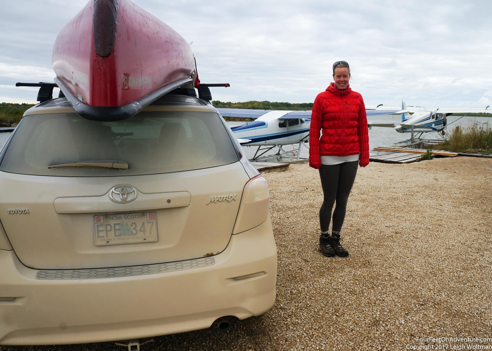
We unloaded our gear beside the larger of the two planes on the floating dock. We tied everything we could to larger items to make sure we wouldn't drop anything over the water. Clint, our pilot, pumped some fuel from a dockside storage vault and loaded our gear into the back of the plane. He was happy to just take the credit card number to run the cost later. He also suggested with the strong west wind that he could drop us off ten kilometres down route on Night Owl Lake instead of Family Lake. It seemed like a good option.
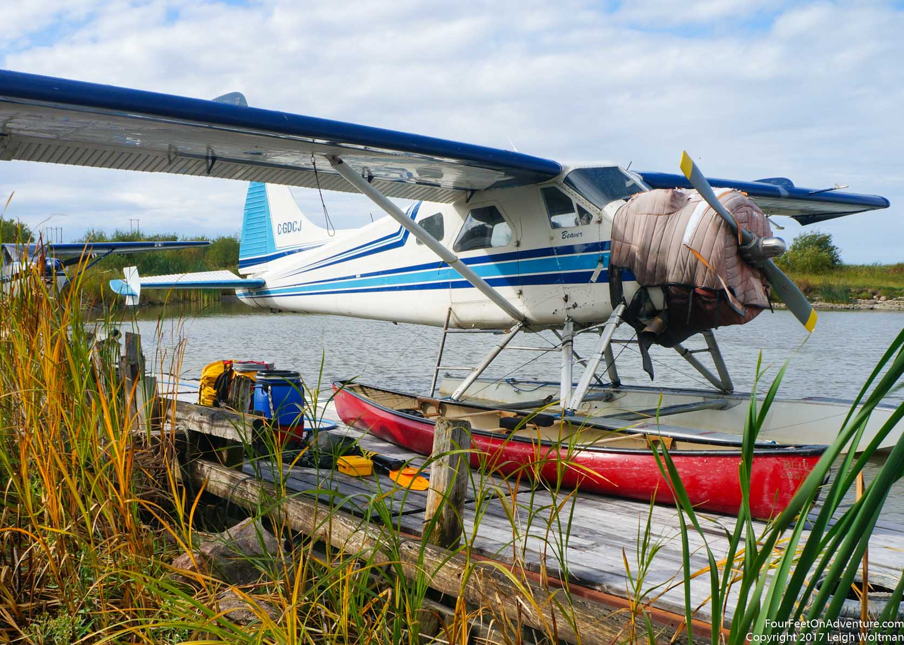
The canoe was lashed to the float struts with rope and once secure, we crawled over the canoe into the plane.
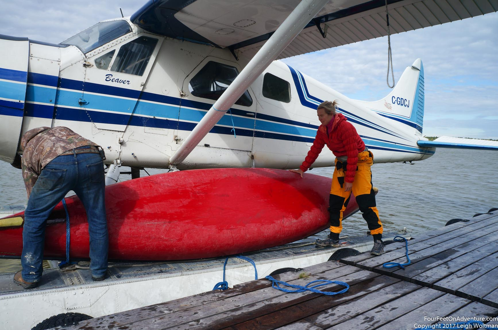
Pushed away from the dock, the wind slowly pushed us into the little marshy bay. The engine was started and gave a loud roar even on idle. Clint taxied the plane up and down the strip of water lined up with the wind, and then when facing the upwind leg again increased the throttle. We started moving faster and quickly you could feel the floats start planing on the surface of the water. Shortly after, you could feel the floats lift out of the water shaking the plane free of its tracks in the lake. We rose, drifting around in all directions as wind gusts toyed with the little plane.
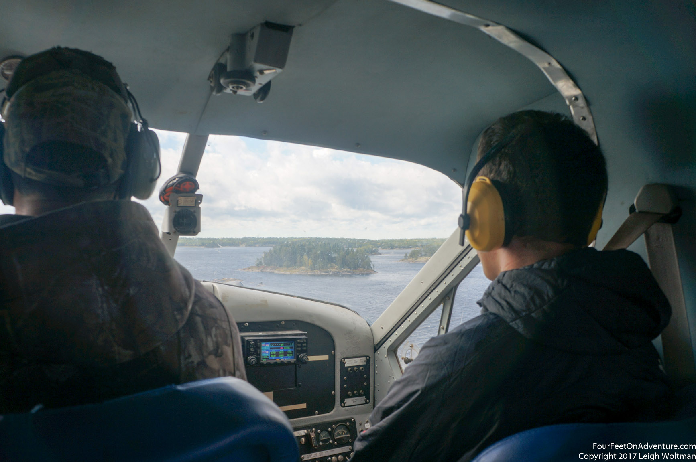
We quickly rose to the west and once a little altitude has been gained we banked over the ferry route cutting over the peninsula we had just driven up. The gravel road cut a straight line through thick stands of pine. We continued rising to the east, quickly crossing over the Lake Winnipeg narrows and then the Bloodvein river. The Canadian shield covering the east side of the lake stretched below us. Huge sections of swamp, turning slightly golden already mixed between stands of pine. We ascended to the level of the fluffy clouds and once leveled out, the plane pushed along at ninety miles per hour. After a while the Pigeon river came into view with moving water visible. Shortly after we could see some waterfalls on the Berens river. Clint banked the plane around to line up downwind of the open section of Night Owl Lake. Quickly the plane descended and soon we were skimming just above the water. You could just feel the floats grab the surface tension of the water and we were gliding to a stop. The engine was cut and we were adrift. Clint jumped onto the float to untie the canoe and once he had it in the water we followed, passing gear he handed out haphazardly into our boat. It was just moments and we had all our cargo loaded and stepped into the boat ourselves. With a handshake we paddled off, towards a little island upwind. Clint quickly had the plane started and taxied downwind. We watched as he turned and took off to the skies once more.
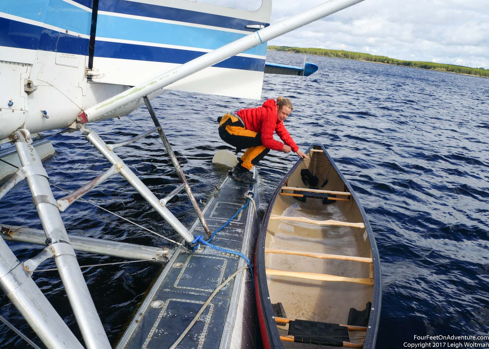
We got to the island and the feeling of remoteness started to set in. It was quiet as we sorted out our gear onto the large flat rocks. We also needed lunch so it took a while to get all the gear sorted into the right bags. Once established we were paddling towards the exit of Night Owl.
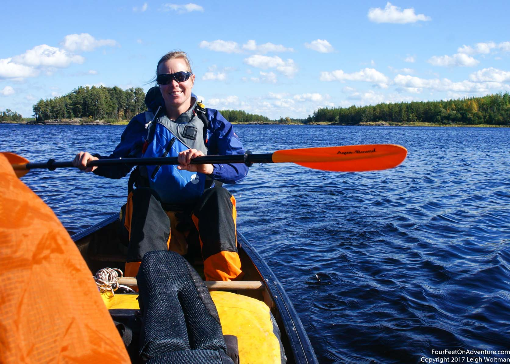
As we saw from the air our first obstacle would be around a second of the river with unrunnable waterfalls. The map showed the river splitting into multiple channels. The portage which would be the longest on the trip was supposed to follow after some swifts on the left channel. Even as the lake started to narrow, multiple islands in the lake gave multiple options revealing what would become very characteristic of this river. The low water level was evident with the colorations on the rocks. As we chose a course through the islands we eventually chose wrong, and our channel looked like we might be able to get through but it turned too shallow for us to scrape by. We had to get out of the boat and wade it through the shallows. We started looking for the portage location which on our guide would start well before the rapids and braided falls did. We were looking for some swifts to mark the access, but instead we found a boulder field. Over this, an old log roller portage for metal boats was starting to fall apart, and more curiously, a small channel flowed in amongst the fairly uniform boulder garden. It was about the width of the canoe and had obviously been man made. Enough water was flowing down it to provide a few inches of water. Once the gear was portaged, it was just enough to generally wade the boat along, although it wasn't quite straight and some rocks necessitated lifting the canoe over. The Berens is reported as being a historical route used for trade by the native peoples since it generally held decent water throughout the ice-free season and didn't have significant amounts of flow making upstream paddling possible. We were left to imagine if this small channel had been dug by human hands thousands of years ago to facilitate their travel. Of course, it was a distinct possibility it was a more modern creation, but being it is so simple, it was grounding to think we were following a trail paddled before us for millennia.
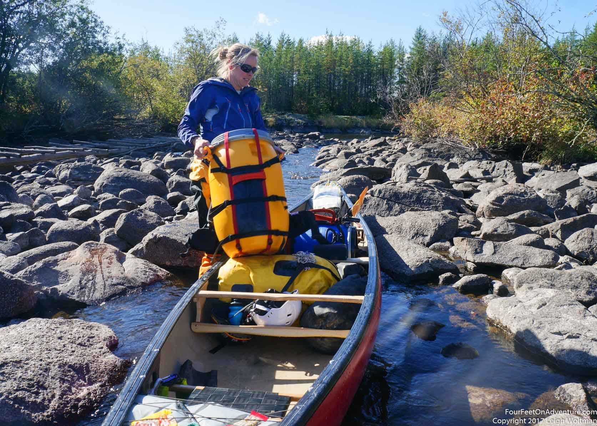
Once over this obstacle, we had a small river channel until we got to the main portage before the river took a plunge. The trail was well used, and some aluminum fishing boats, and even one with a motor were positioned at the end. The trail was cut several metres wide, and a strip worn in the grass marked the well trodden centre. We were pretty excited to have this easy portage done, since it accounted for nearly half of our total portaging distance expected. Portages can be a nice break from paddling, but there is no denying they are a lot of work and would be avoided with maximum creativity. Once in the boat, we surveyed the two channels pouring water into the next flat water section. Playing in the outflow of one picked up a little water in the boat, maybe we should be a little more prepared before we accidentally flip the canoe!
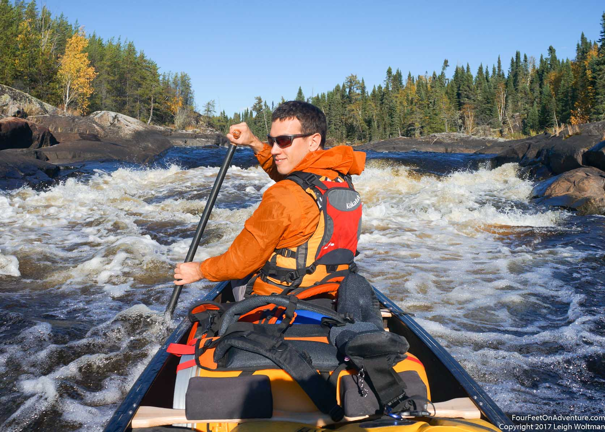
With the portage done, the sun was starting to show signs of moving down, and in another couple kilometers we saw a small island that looked like it could be workable for a night's stay. The island was rocky and rose quickly out of the water, with various conifers crowding its top. The tent could be pitched on some moss underneath the trees and a large bare rock shelf coming off the island would make a great spot to cook dinner. I got started on the tent, getting our sleeping pads blown up and sleeping bags fluffed out of their bags while Annette worked on dinner. We managed to get fed and cleaned up in time to watch the sunset cast orange light on the eastern shore.
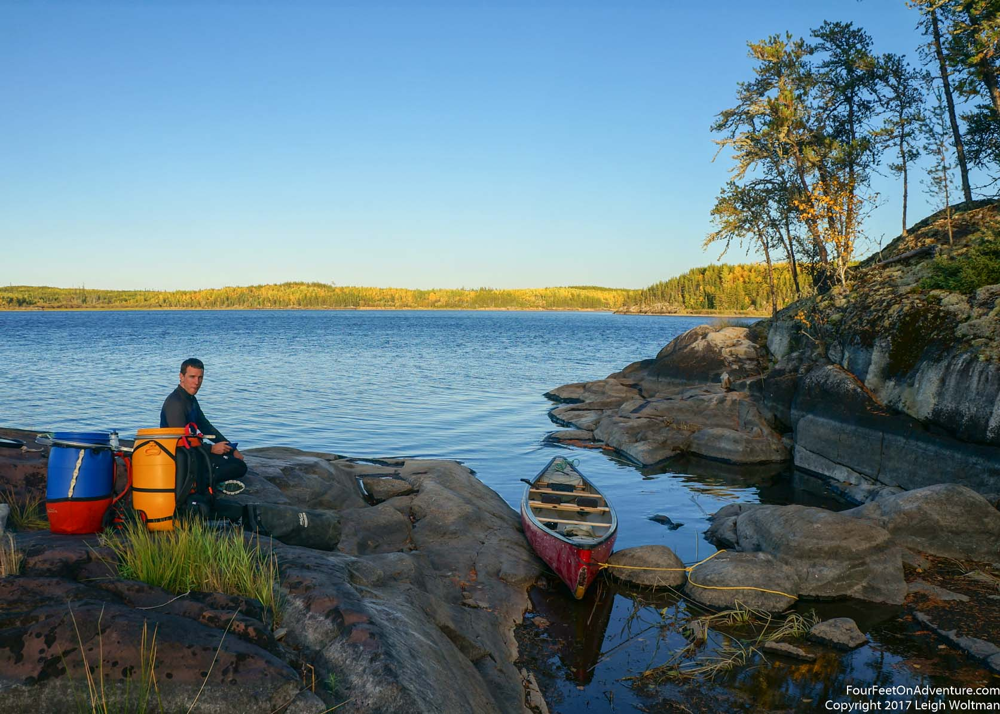
In the morning we had good weather and we packed up the canoe, still rusty on our camp habits and the specific organization we needed to stuff everything in the canoe. If we were lucky, today would bring some runnable rapids so we snapped on the canoe skirt. As we were putting the canoe in the water, a look in the shallows revealed an interesting sight. The sticks settled on the bottom were moving. Looking closer, we saw that these were not sticks at all. Indeed, the whole bottom of this shallow depression in the rocky shoreline was covered with bugs in stick houses. The typical reed that grows as a slender green shaft growing out of the muddy shallows as being used as a house for this bug. The reed is hollow about the diameter of a drinking straw, and it appears this bug manages to get a dead section but to about 3-4 centimetres long, then crawls into it and sticks its front legs out and walks around almost like a hermit crab. Eventually curiosity got to us, and we pulled one fellow out, who immediately retreated into its reed. We used a small stick to push the bug out of the reed onto the rock. The back of its body wasn't very long, but had legs that were definitely not very developed, probably only to the point that they could hold its body inside of its reed home. The bug slowly tried to make its way back to the water. Once in, it walked long the smooth rock bottom and Annette decided to try to drop its original reed home in its path. At first it wandered by it, but on a second attempt, it knew what this was and quickly crawled in the back end and resumed walking with its familiar house again on its back.
After a paddle we came to our first rapid, Whiteman Falls. The guide book described three separate channels to the rapid but given the water level, two channels including the suggested route were dry. We pulled the boat out onto what would typically be a treed inland in the rapid and went to investigate the flowing channel. Up over the rock, and it looked good! An easy class two run, it had a slight curve to it, but looked deep and safe. But of course, we were standing 10 metres above and looking down, never a good way to get perspective, so we clambered down to get a closer look. Still it looked good. Annette was no doubt a little nervous, this would be her first rapid in a canoe, but I knew the rapid looked good and was very low risk for us, a great one to get started. With camera rolling we pushed off shore and practised a few turns before the brink. We lined up, but she got nervous and called us off. We spun around and chatted a little more. With a tiny bit more confidence we set off. I paddle in the front of the canoe as in whitewater, I think it is often vital to get the canoe set to the right line in between rocks and I can often get more control over the front and better visibility sitting in it. We lined up for the river right side of the run and we splashed through the main drop and had a clean run. I turned around, and Annette was smiling so it couldn't have been all bad! The drop was enough to get a decent amount of water so we took to the shore to roll the canoe over and empty it out.
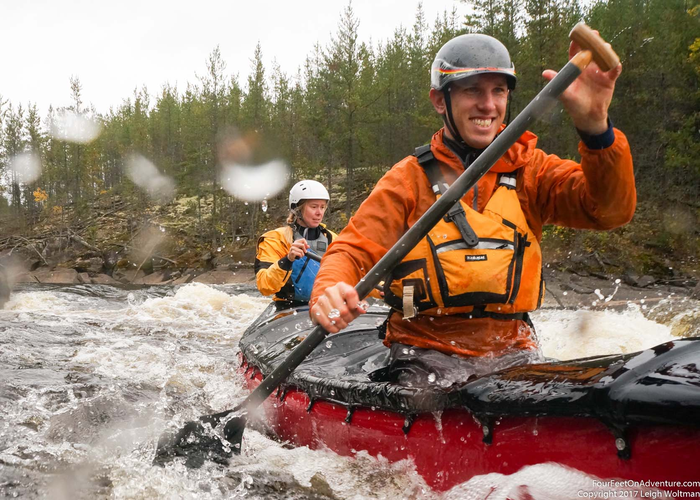
Following the river downstream, it starts to become narrow and we pull over to take a pee break where the rock gives a natural little harbour just the right size to slide a canoe into. On the main channel, the current is visible as it twists and spins the surface as it gently slides of the little bit shallower bottom in this narrow section. Watching it is mesmerizing and so peaceful.
Soon, we come to Crane Falls and the water is coursing through the left channel, but there is lots of drop and this is definitely too big for us. The right channel would normally be a nasty option as it is a steep drop, but there is only a trickle of water flowing over it. We decide to portage here and we carry the gear over the rocks and down the smooth rock of the falls before stopping to have lunch. Carrying on, we wrap up lunch as it just starts to rain. We have a larger, almost lake section of the river to paddle and the rain settles down into a good drizzle. We need our rain hats and full rain gear, but even then, the cold dampness seeps in making us quite cold.
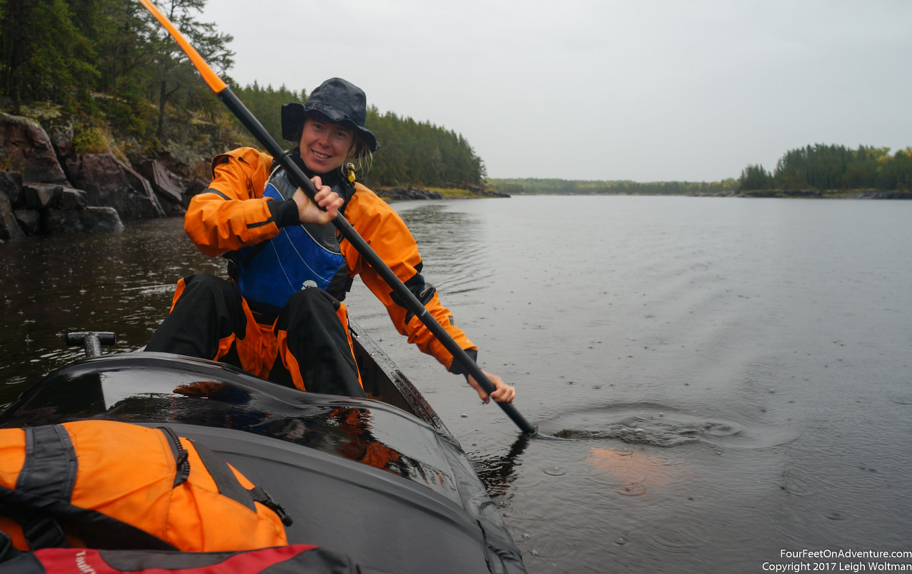
After the lake, we come to Manitou Rapids. Again, part of it is dry but we have a good channel. It is an easy class I but a fun run with a steep rock wall on the right strongly influencing the flow of the rapid. This rapid pours into a wider section and here we have two choices. The right channel twists so much it actually loops back on itself and adds a couple kilometers of paddling. However, the guidebook indicates more campsites on it, so we decide to follow it. At the entrance to this channel, the guidebook marks some petroglyphs. We stare at the rock cliffs and give up until we notice a small red mark. Is it a canoe with two paddlers? We can only imagine and fantasize as the drawing is small and not very bright.
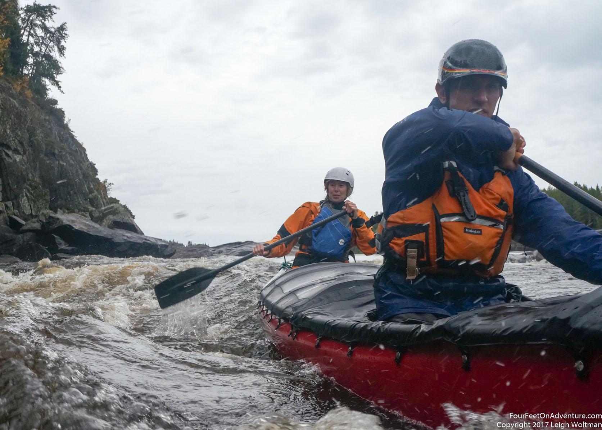
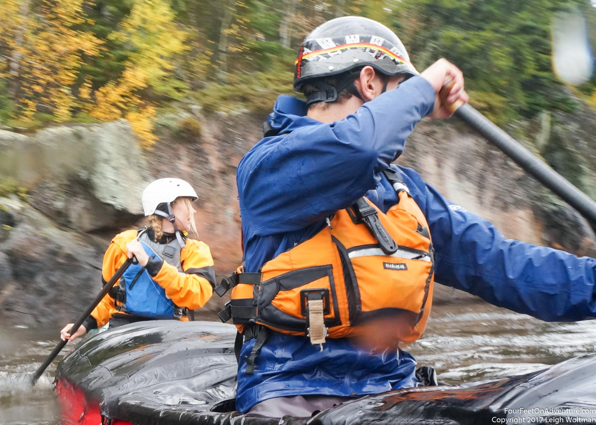
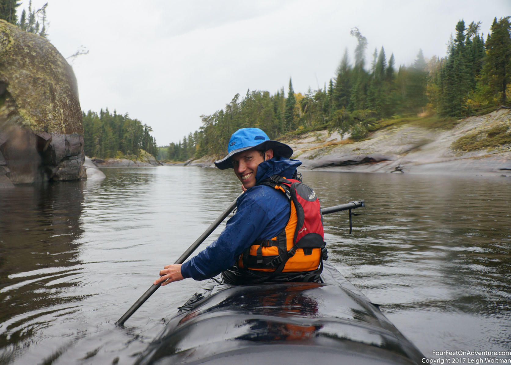
After a few bends in the channel it is getting to late afternoon and when we spot somewhat of a campsite we decide to stop for the day. It is still raining and we are getting cold. Initially, we were going to camp on a large rock shelf just a few centimeters out of the river, however, there is a better spot just under a tree that will shield us from some rain. I get the tarp setup extending from the same tree and the respite from the rain under the tarp seems to help with the cold a little. We have some dinner and crawl into the tent. At this point, the rain has let off and we catch some golden sunset as the sun peeks through a small patch of clear sky on the western horizon.
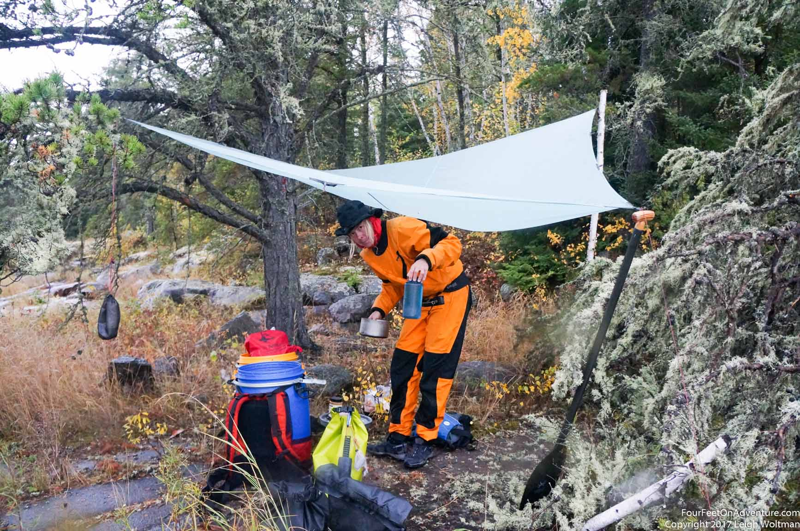
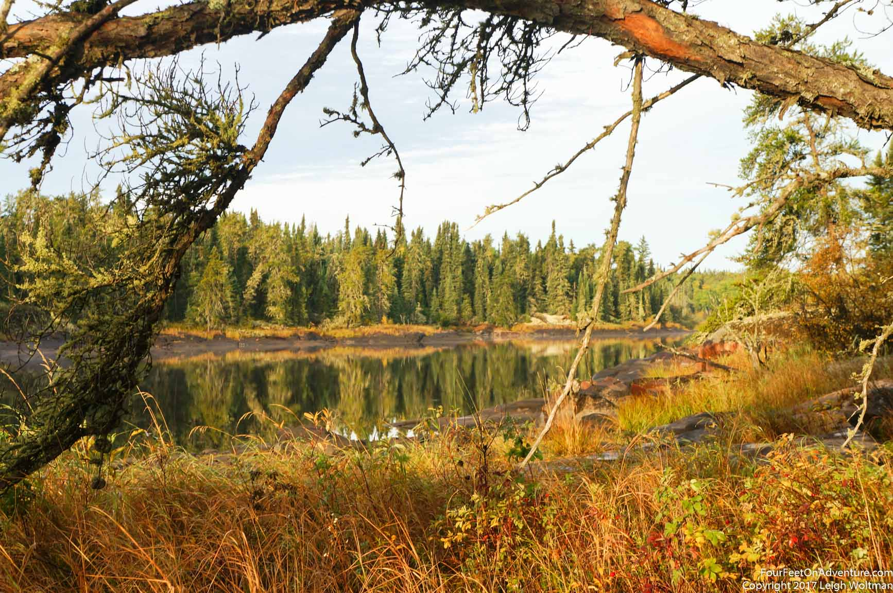
The morning brings somewhat clear skies and we wait for the sun to rise to coax us out of the tent. We're slow packing up because everything is wet and we are trying to take advantage of the sun to get things a little dry. We watch some beavers crossing the river towards their lodge with leafy branches in tow. It is almost late morning by the time we are on the water. The cool temperatures and slow rising sun means it takes quite some time to get some good drying action. We meander along our narrow channel and after a warm up paddle come to the only rapids marked on this channel. It is completely dry, not a drop of water is flowing. Now, we know, this was the small channel, and all the water will be flowing through the other one. We roll the boat over the first shallows with some beaver chewed logs and then pole it across the shallow pond, which would probably normally be a turbulent start to a rapid. At the main drop, we slowly portage the gear over the rocks that while dry, still have a hint of algae and aquatic growth making them fairly slippery. The channel now turns to head 180 degrees to its original heading, and without flow, the water is muddy and shallow. It isn't too much longer and we have reconnected to the main channel. A burn within the last couple years scars the hill on the far side of the river.
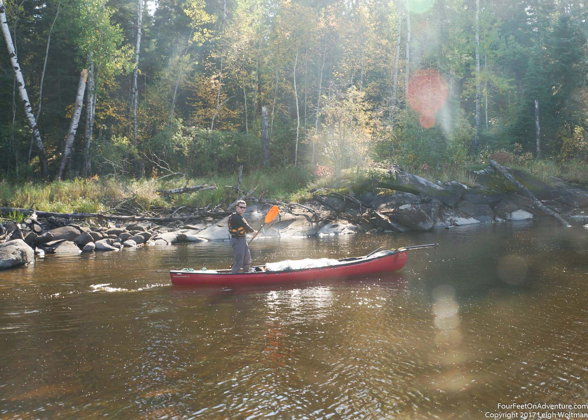
We get two swifts in a row, making for a nice mental diversion from the flatwater paddling. Our channel wasn't that long, but it is good to see moving water again. The section of the river heads very straight, then suddenly makes a sharp 90 degree turn to the left. We must be following faults in the rocky surface of the shield here. Before Big Moose Falls we stop to look for the pictograph upstream of it. We clearly find it and one symbol, a human hand, stained on the rock in red, is easily recognizable. The other figure might be a moose, but the erosion of the elements on the original paint means this one requires more imagination. The falls splits around a large island, we invesstigate the portage trail on the left channel, and while the rapid might be runnable, it is really more of a large downhill slide. It looks somewhat smooth, and in a kayak I would give it a try, but in our loaded canoe, we will portage. We can't see the other channel, but given the elevation drop, it must have significant energy too. We decide to paddle up to the brink, ferry out and then portage beside the rapid. This will cut down on the distance and up and down of the traditional portage trail. We creep up slowly to the top of the rapid, carefully talking through all our gentle moves. We don't want to swing around or get pushed sideways as there won't be enough time to recover before being sucked down the rapid we don't intend to run. With a nervous grab of shore, we can get out, and carry the boat and gear over. We decide to take a walk to the other channel. It is beautiful, the water cuts down beside a large cliff face, but as we suspected, the rapid is too big for us and a large boulder right in the middle makes navigating it a challenging prospect.
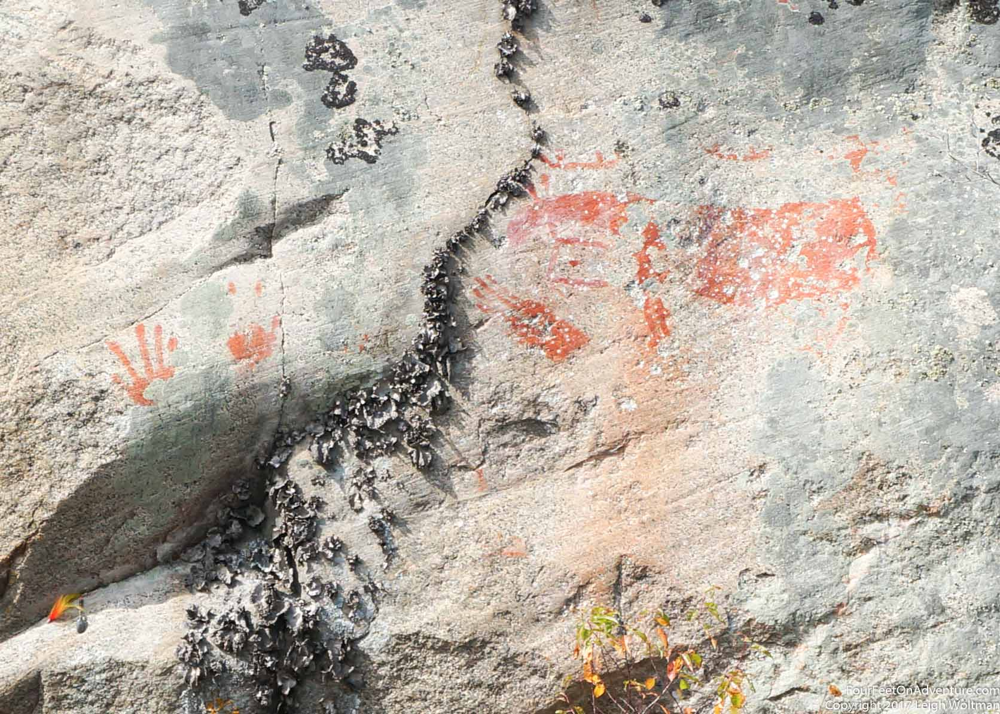
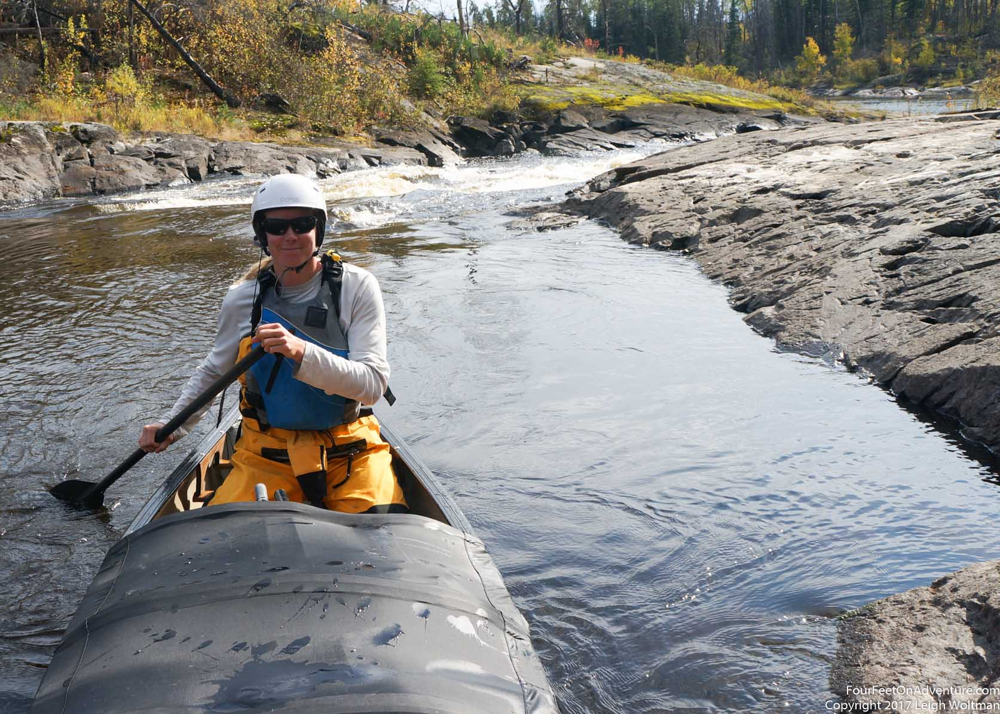
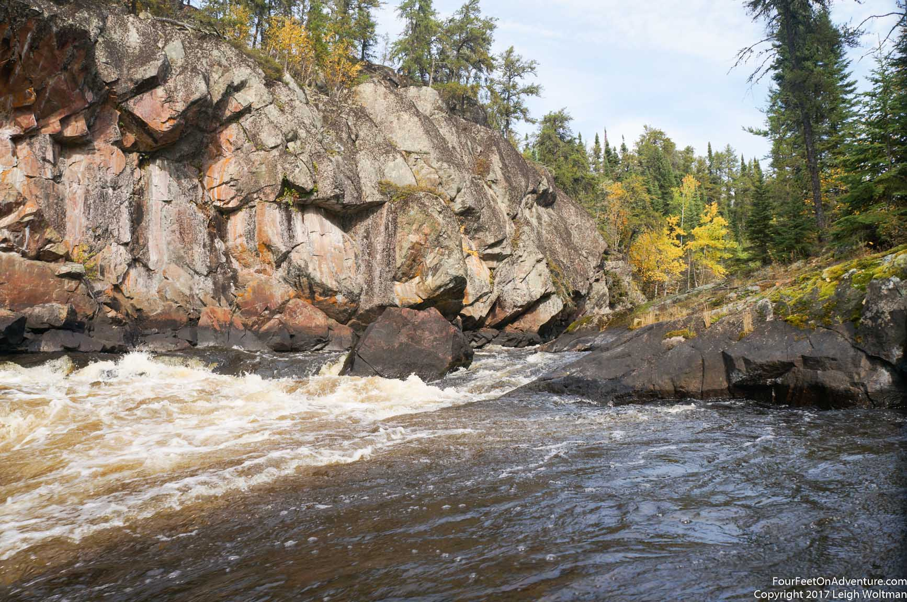
Next along the river, is Big Moose rapids. We scout the right channel as it seems to have more flow, and we find a nice run. With the camera setup, we execute well, but plunging through the main drop we are a little more centre than I'd like to be so the bow dives. As the water hits me, I realize I didn't put on any type of waterproof top and the cold water rushes over the top of my no longer dry pants. We pull out and empty the boat and I curse my mistake. The other channel is surveyed and it is also runnable, but now on the downside we can't be convinced to portage back up to give it a try. This is the start of Long Lake and we have two channels to get to the main body of the lake. We choose the shorter one. Long Lake is just a wider section of the river really, but it fits its name. We pull out at an island for the night. I get my wet pants hung up and they make progress on drying out. We end up with the tent setup in a little alcove of trees, but it justs starts to rain again as we are splitting our evening chocolate bar. My mind knows that eating a chocolate bar right before bed is a bad idea, but we like the treat and reward for the day.
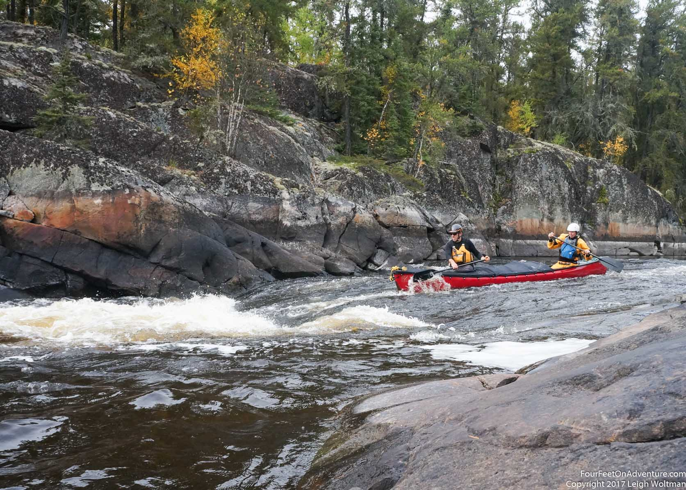
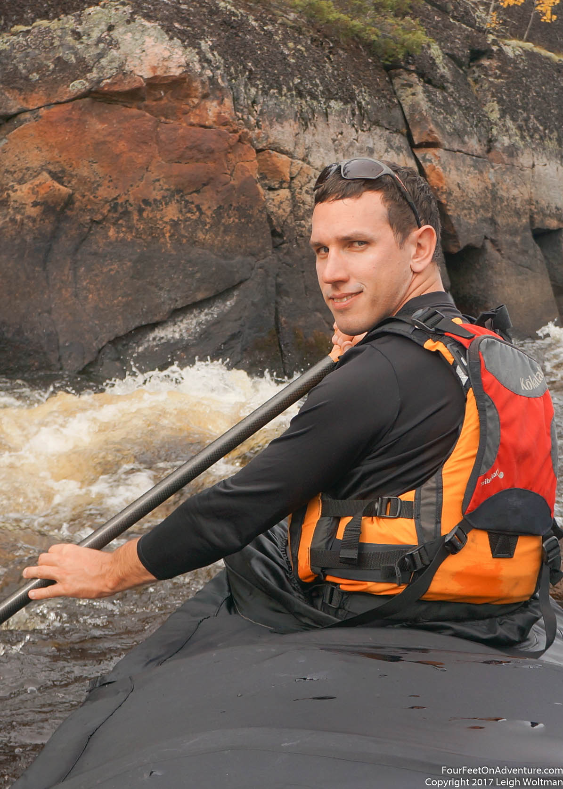
In the cold, dewy morning a thick overcast sky diminished our hopes of a warm sunny day. The gear was again, fairly wet. We strung up a clothesline and hung everything from it. Slowly a breeze started to gather until it was blowing at a decent clip. However, our equipment dried painfully slowly as the damp air was already saturated. Soon the breeze was lifting the tent into the air secured only by the clothesline a metre off the ground. Eventually, we considered everything at least dry enough to roll up for the day. These morning drying sessions took a long time, and meant that pretty much every day we didn't get paddling until late morning. While we would have liked to get going sooner, we spent much of the morning waiting for some sun and breeze to do the trick.
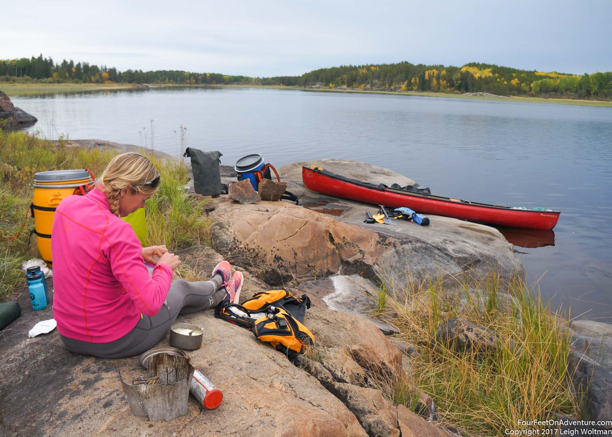
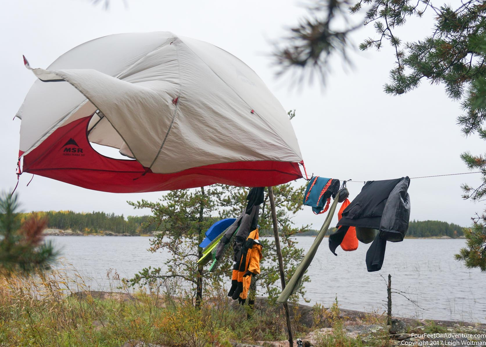
As we were packing up the canoe, I reached awkwardly to put my water bottle on top of the dry bag in the front of the canoe. I felt my rib cramp and spasm, obviously it was still weak from straining it in Mexico. This slowed my stroke for a few days as giving a good torso twist in my canoe stroke wasn't tolerated too well. Annette managed to put in the extra effort to get us moving up along Long Lake. The outlet of the lake showed three options on the guide, all of them within a couple hundred metres of each other. The first channel looked shallow so we skipped by it without looking all the way, the second was an okay drop, but we would definitely get a boat full of water. We decided to try the third. It was a similar drop to the second, very tempting, but it was steeply pitched so the boat would definitely plunge deep and take on some water. It was also pretty safe, it was a quick drop and flushed out pretty good. But, the weather was cold and we were already adding extra layers because the damp air was giving us a chill. So while the rapid would probably be fun, an unintended swim would mean having to stop and try to warm up and dry off. We decided to lift the canoe over the rock island and use a small stream of water to aid in the process.
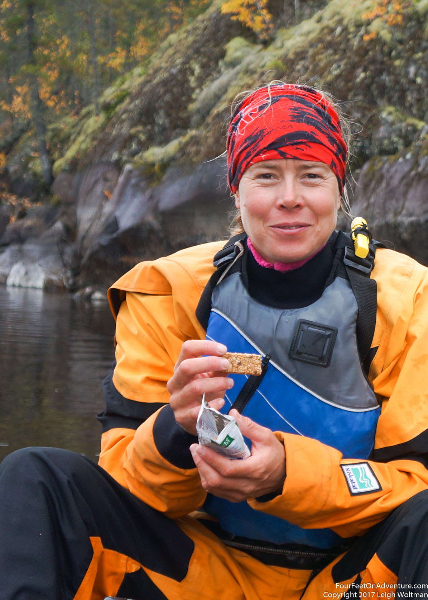
A couple kilometers downstream we came to a simple rapid. We surveyed from shore and decided to put our waterproof gear on and give it a run. It was a simple wide line, but the spacing of the waves meant we took on a fair bit of water. Following the curve of the rapid, there was a small rocky protrusion in the stillwater that followed. Here, we lifted the loaded canoe as high out of the water as we could and rolled it over to bail out the water. Annette suggested that bringing a kayak bilge pump would be very useful for these situations, I agree and it will be on the list for the next trip.
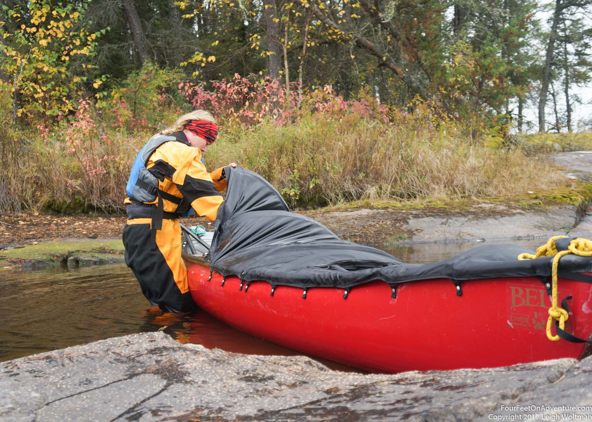
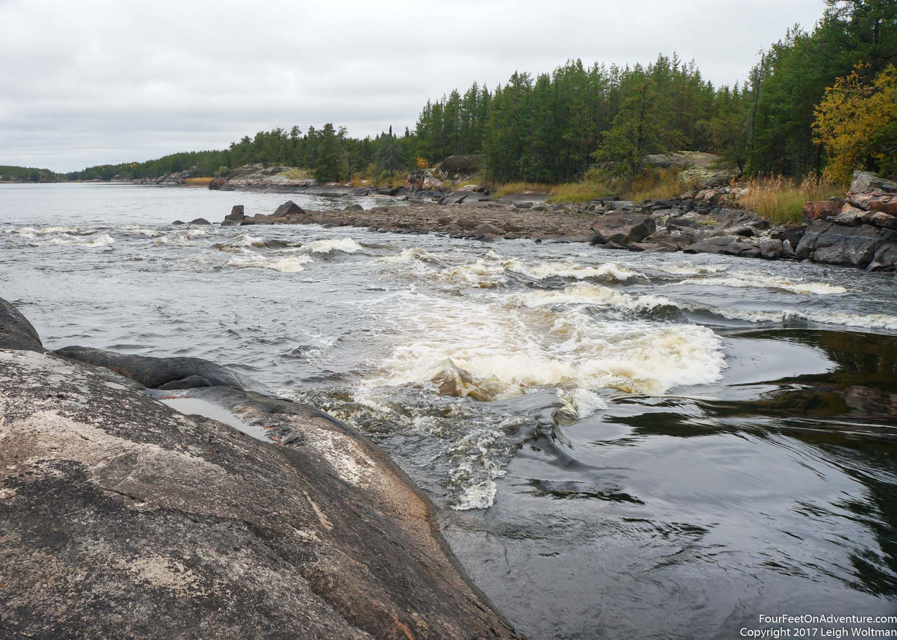
Shortly after we were expecting a large rapid since the guide book indicated one metre waves, but with such low water levels we found only some swifts. The next rapid was right around the corner, and what was supposed to be a very pushy lead up was very straightforward. Wolf Rapids was a large sloping ledge at which the bottom gave a little bit of a retentive hole. We first scouted from river right, and from here, it looked like the left side of the river was better. We paddled over and got out on that shore to take a look, no, from this side, it was definitely the right that looked better, which means it all looked good as long as you didn't get that close. We decided to pass, and headed back over to the right bank to line the canoe down the sloping rock. There were parts of the rock that were very slippery but uniformly spaced cracks gave a little edge to grip on fairly reliably. At this point, the river had split into three channels, each taking their own route a couple of kilometers long. By choosing Wolf Rapids we had already skipped one channel, but here, we still had a choice. We paddled to the rapid at the start of the far east channel, it looked pretty easy to start, but we could see another rapid further up. If we went down it, we would have a hard time turning around and coming back if we didn't like what was ahead. We decided to check the next channel, this rapid went over a large ledge in two distinct drops. The first drop we checked had no water, and the second was a proper waterfall, but with a good established portage trail. This would be our route, but first we needed lunch. When on the river, I get a little entranced with what the next obstacle could be and I'm always eager to head there. Besides, if the rapid or falls needs to be portaged then we have a good stop for lunch. Annette has now learned that I tend to believe this, and at each rapid, say "lets check out the next one for lunch" which turns into the next and then the next, meanwhile, time has slipped much by the typical noon hour of the meal. Now, she made her point known that we needed to sit down for a round of cheese sandwiches followed by nutella sandwiches.
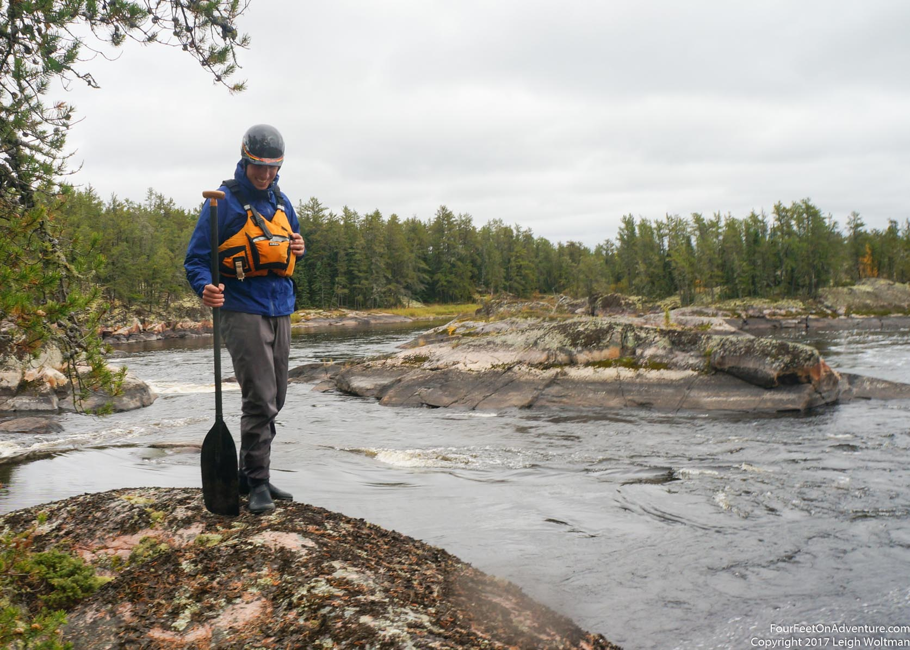
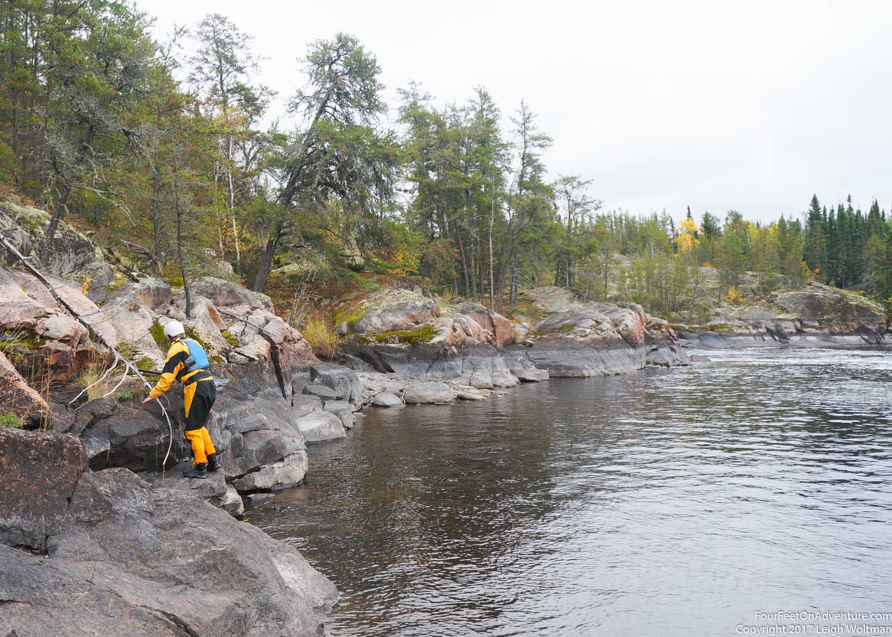
The portage trail was nice, but before we brought the boat over, we decided to walk to where the other channel empties into the main channel. Maybe it would be runnable and we could avoid the portage. A steep rugged shoreline hike got us there, but it poured into our channel with an unrunnable waterfall. We would be forced into the carry. My back was still a little strained so Annette would take the canoe over the portage, and my usual assistance of getting it up on the shoulders wouldn't be available. Doing the deadlift up and flipping the boat onto your shoulders is a strenuous move and if you haven't practised it much, it can be very difficult. But previous to the trip, I could sometimes look out the windows and see that Annette was spontaneously practising portaging the canoe around the backyard. This time she hiked it up and got it flipped over, but to make the flip happen she had to duck under it and ended up too far to the front. The stern of the canoe nosed into the earth as she struggled. I offered to help, I could stand and she could set the bow of the boat on my shoulder giving her some slack to shuffle into position. This kind of worked until it rolled off my shoulder and the canoe unceremoniously fell into the swap with a thud. Always a good reason to have a durable plastic boat. The next attempt didn't look anymore graceful, this time with the nose of the canoe shoving into the mud, but she managed to get the yoke on her shoulders and I guided her through the trees over the portage. The gear was then shuttled, and then we passed stuff down the steep rock which would be our put in. Once the boat was loaded and buttoned back up, we hopped in, playing in the current pushing out of the waterfall we just avoided. This section was beautiful, sharp rock walls with multiple waterfalls from different channels all converging in very close proximity. We lingered a little, with the surface covered by bubbles from the thundering drops. But too quickly it was time to go, and we left Crooked Falls behind us. The river walls remained tight, and the next rapid was mainly just a swift. However, with water lines on the rocks sometimes a metre above our current level, I could see how this section of the river would be really pushy.
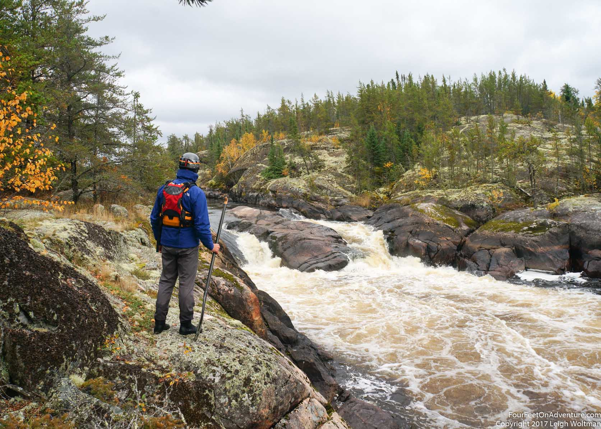
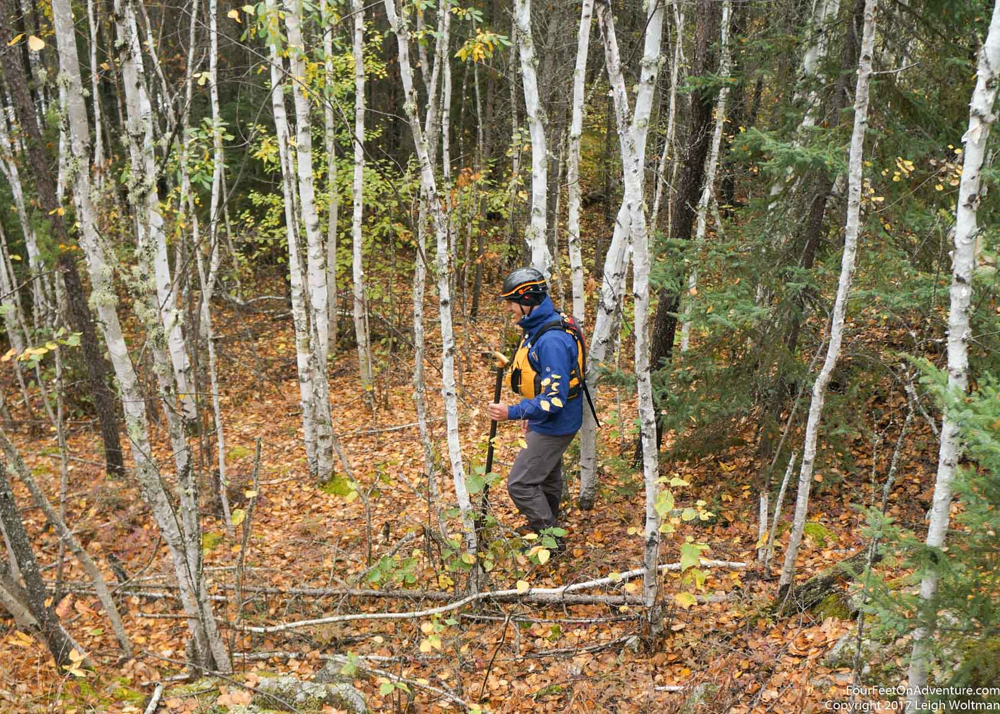
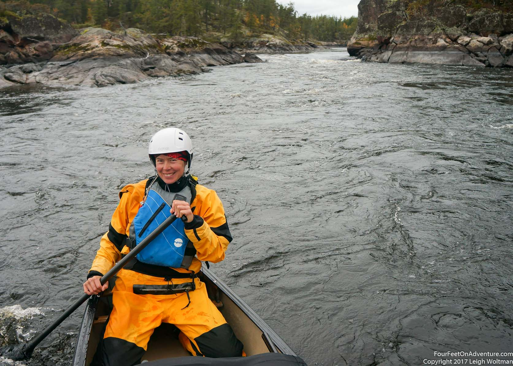
The river continued running straight, constrained by rock walls. Looking at the map, one can see the river is again filling in large faults lines in the rock. Soon, we were at the next obstacle. At this spot, within 200 metres the river took three paths over the next ridge of rock. Two of them were marked as 'Childs Falls' and looking at one, even though it was dry, we understood that it would never be runnable. We headed to the class III rapid which was still an appropriate difficulty. Here the water poured through some swifts to a large pool and then dropped in a fast tongue down to the next pool. The speed of the water gave a good wave and little bit of a hole at the bottom. In warm water it looked fun, but our heavy boat would and we would surely be drenched even if we stayed upright. The portage trail was and up and over, probably only 25 metres long, but it was both a steep up and a steep down. After moving the gear, we two-manned the boat over the trail. At the put-in, the water was heavily circulating back and actively eroding the shale looking rock. With the loose rock and the current bobbing the boat, we both frequently stumbled and fell as we loaded the boat back up. We must be getting tired and would need to look for a campsite soon.
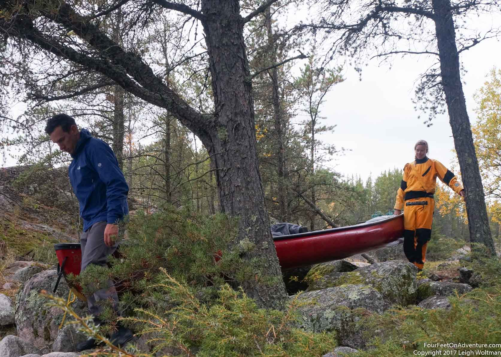
But first, we needed to loose some more elevation, as the other routes we avoided were falling further. What was marked on the map as a class two rapid, was nothing like it. There was a large rock in the middle of the rapid which was being split into two channels by the rock. There wasn't much room for maneuvering as we gently floated up to the point on the rock that split the current. One metre either way and we would be sucked into one of the channels, but it worked and we were both able to jump onto the rock and secure the canoe. Both channels weren't runnable for us, the left one was possible but a little two violent, and the right had a big boulder that the main flow was smashing directly into. We had to lift over the rock we were standing on, as both sides of the river rose steeply in cliffs making it impossible to portage. We lifted over, but the put in would involve sliding the canoe and then ourselves into the tailrace of the left channel. It made for a little bit harrowing of a boat rental. Annette had to hold the rock and the canoe while I got in, and then follow herself without dropping the upstream edge of the canoe or we would dump. The whole time, she was definitely looking like it was a place she didn't want to be.
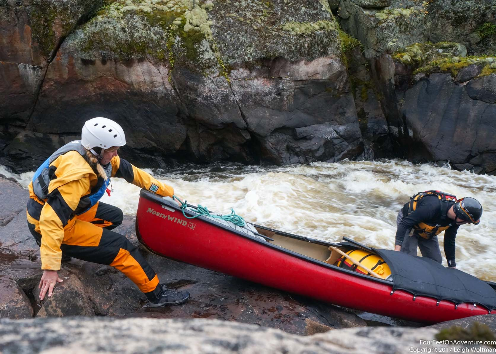
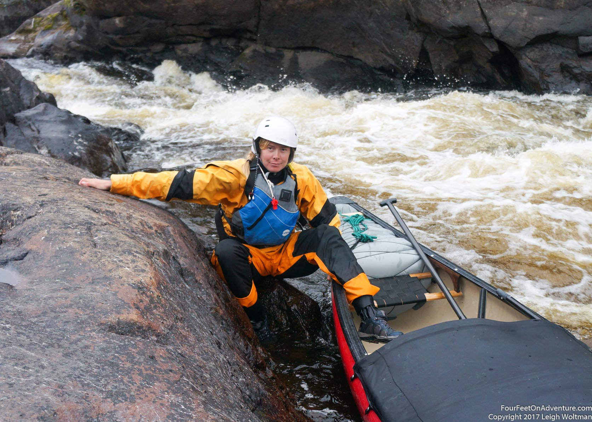
But we got through, and shortly after the river started to open up a little wider. Based upon the topography of the ledges, some pools in the river drained faster than others at low water, and in this area, the water lines on the rock were a good two metres above our boat. An island in the next open body of water looked good, and I gave it a walk over until I found a great spot for the tent. The sky even opened up for a little sun as we cooked dinner and setup camp. We had a great spot for the tent, on this rocky and never flat island, a stand of pines had grown tall and filled in a spot underneath them with pine soil that was both flat and free of undergrowth. We ended up packing the last few things away for the night just as it was getting properly dark. Suddenly a beaver slapped its tail in the water only several metres away from us. If we looked carefully, we could just see the beaver swimming in the water, and tossing a small rock into the water would scare it into making another tail slap. This was Annette's first experience with this, but as we found the beaver kept doing this, we assumed it might be trying to scare us away. I could only hope that it wouldn't do this all night. As we settled into the tent, the beaver kept slapping, but thankfully after an hour it realized we weren't moving and accepted the state of affairs.
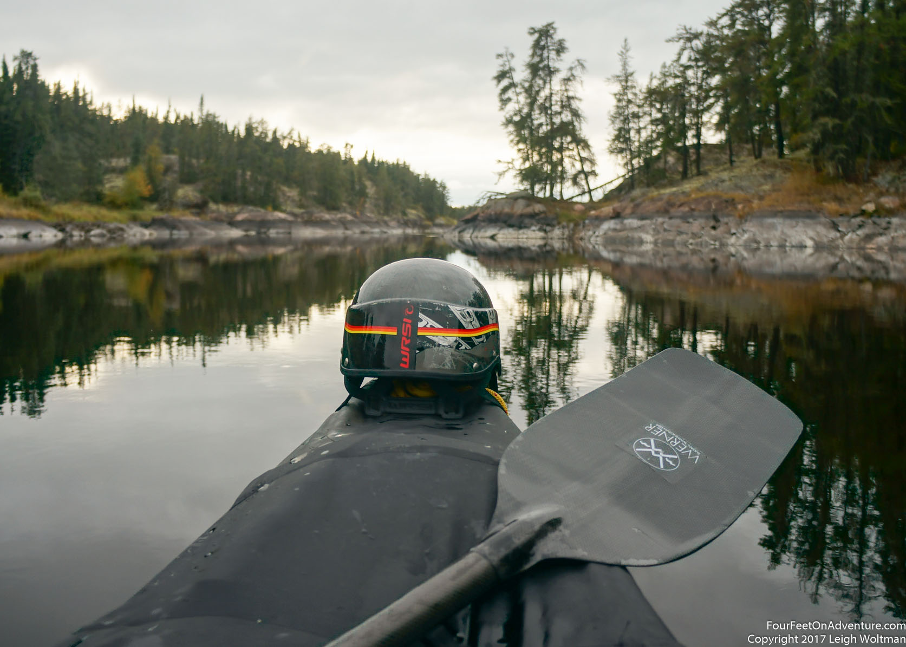
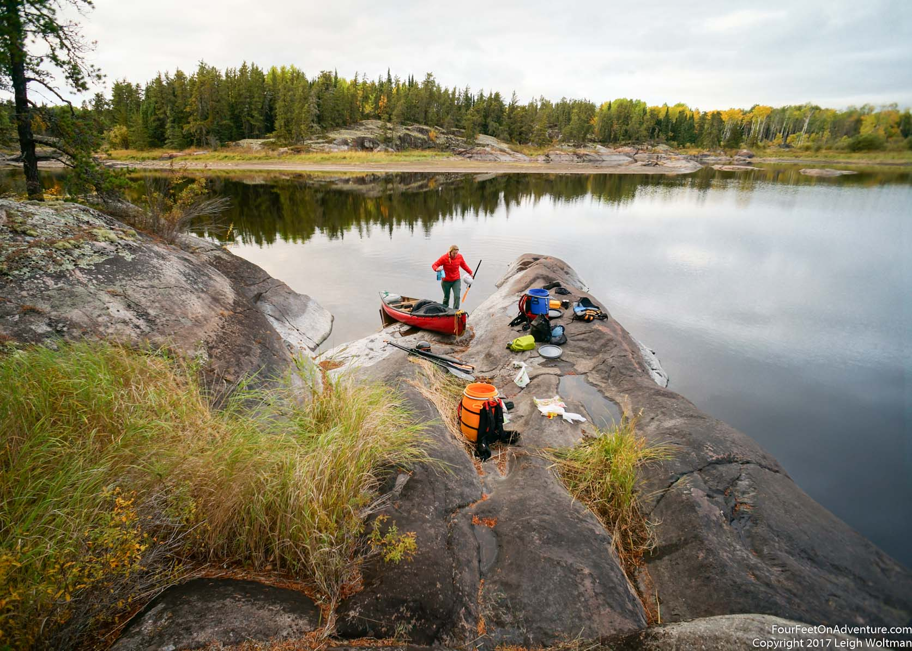
The next morning we awoke to rain and we decided to wait it out. For breakfast we put up the tarp and cooked oatmeal underneath it. Still it was cold and wet and we crawled back into the tent and jointly read a Nicholas Sparks novel that Annette had snuck into the gear bag. The rain continued all day, and we never really left the tent. Just for lunch, bathroom breaks and once to set off the SPOT beacon for a location update. By night, we were ready for bed early as really there was nothing else to do. We had finished the book and made all the notes we could think about discussing.
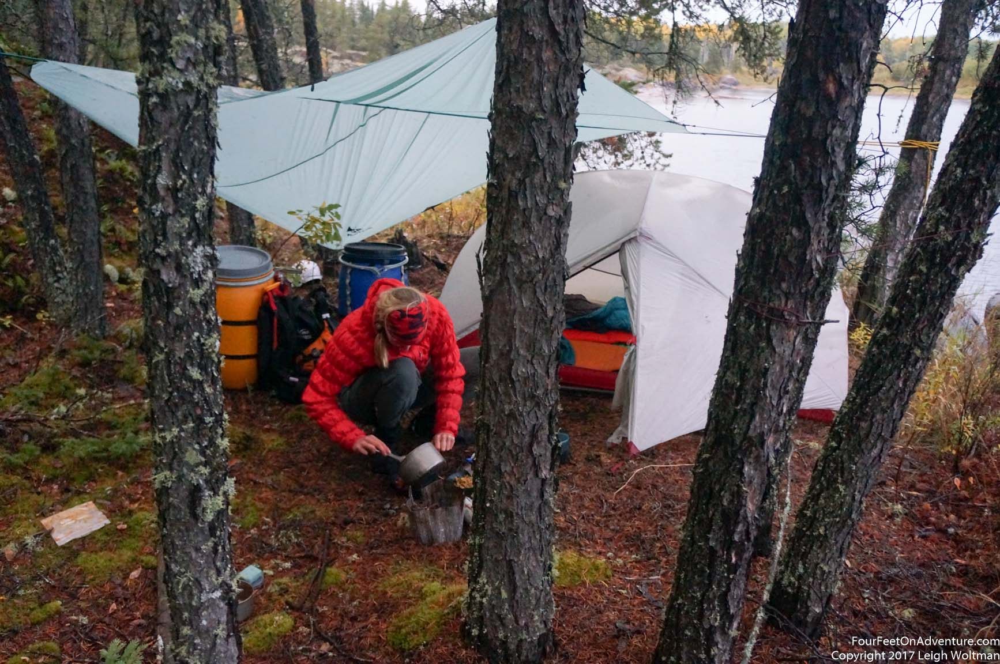
The next morning was still damp but at least not raining. We hung our gear and with the entire rain of the previous day, it took a long time to dry. Eventually, the wind started to blow and we got a little bit of circulation to help. Our first rapid was a long canyon and the portage trail started early. It was marked as a class five, essentially unrunnable and a couple grades above anything we might attempt. We pulled out and carried the gear over the portage. At the bottom we decided to bush crash and see what the rapid looked like. We were shocked when we saw a fairly simple run, just one ledge that was questionable, but we figured we could slip over it. With the gear already carried, we decided to run the empty boat. The canyon started with a class I rapid that made you commit and then we lined up for the ledge. We had a good line and it was a fun run. Being our first rapid without gear in the boat, the canoe felt peppy and responsive. We picked up the gear at the end of the portage trail and headed back upstream a little to grab a picture.
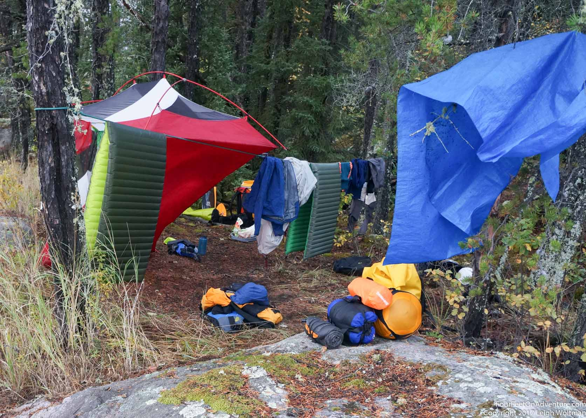
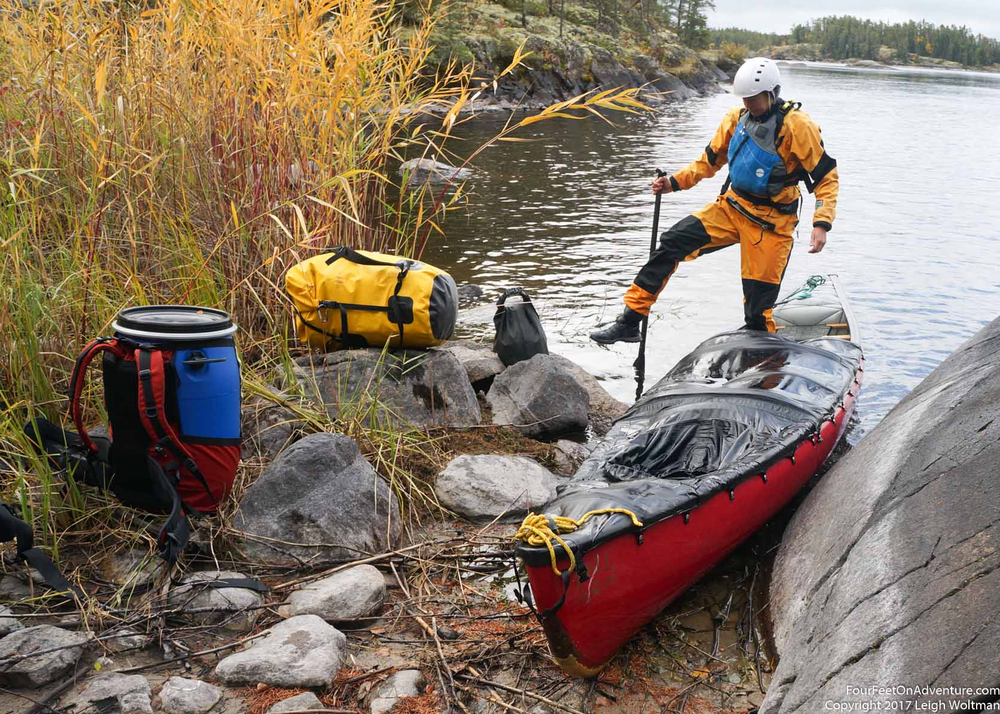
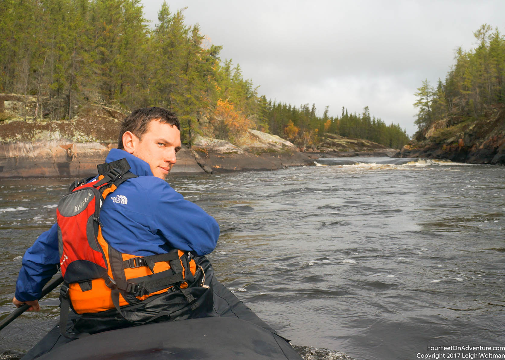
Beaver Dam Fall really did had a beautiful campsite on the island in the middle of the rapid, it would have made a much better spot to have a rain day. We ended up lining and wading the edge of this rapid. We then has several rapids in fairly quick succession.
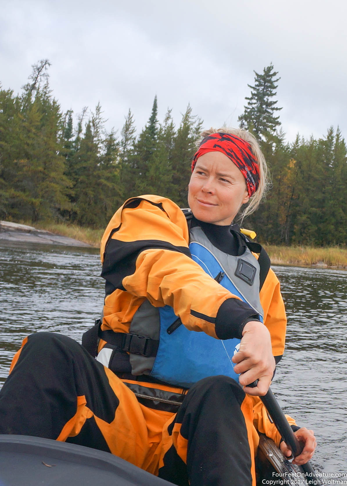
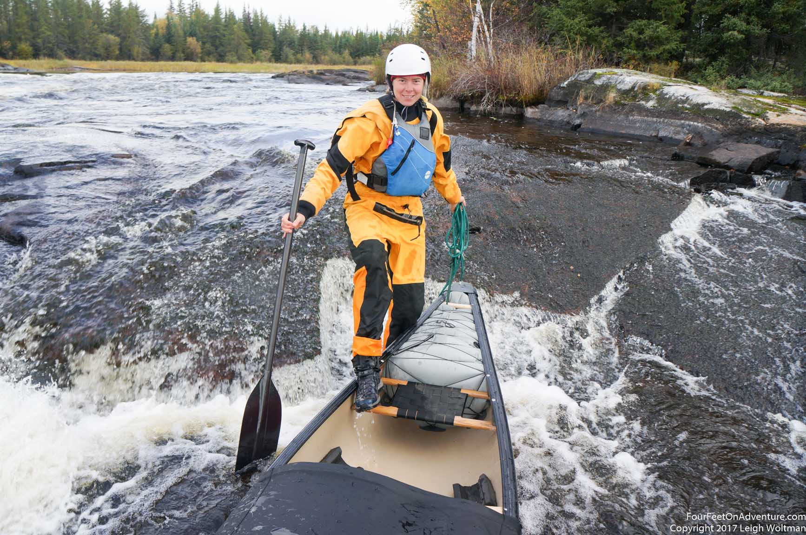
Split Rock Falls was supposed to have three channels and while the outer two were running both were pretty technical so we ended up carrying over the dry middle channel. Here we found two people, our first of the trip. They were running a motorized canoe up river, in search of moose. They told us about their other two friends and their camp downstream. From here the river split into two channels, with the north route having two rapids both marked 'serious shit' in the guidebook. Where the north route branched off, we got out and took a look at the first rapid on that route. It was a definite waterfall with water making a sharp directional after going over the falls, we agreed that it didn't even look nice if you accidentally went over it. We took the south and after a class one, we had lunch on the edge of Island Hill Falls. It was a mandatory portage anyway. After lunch, we decided to look up the river where the north branch rejoined. Here the rapid, was a beautiful S-turn of water with nice eddies and smooth enough current that we could eddy hop up river. There was even another passage that we could run down. It was a nice spot and the whole time we joked that we were paddling up and running the second 'serious shit'.
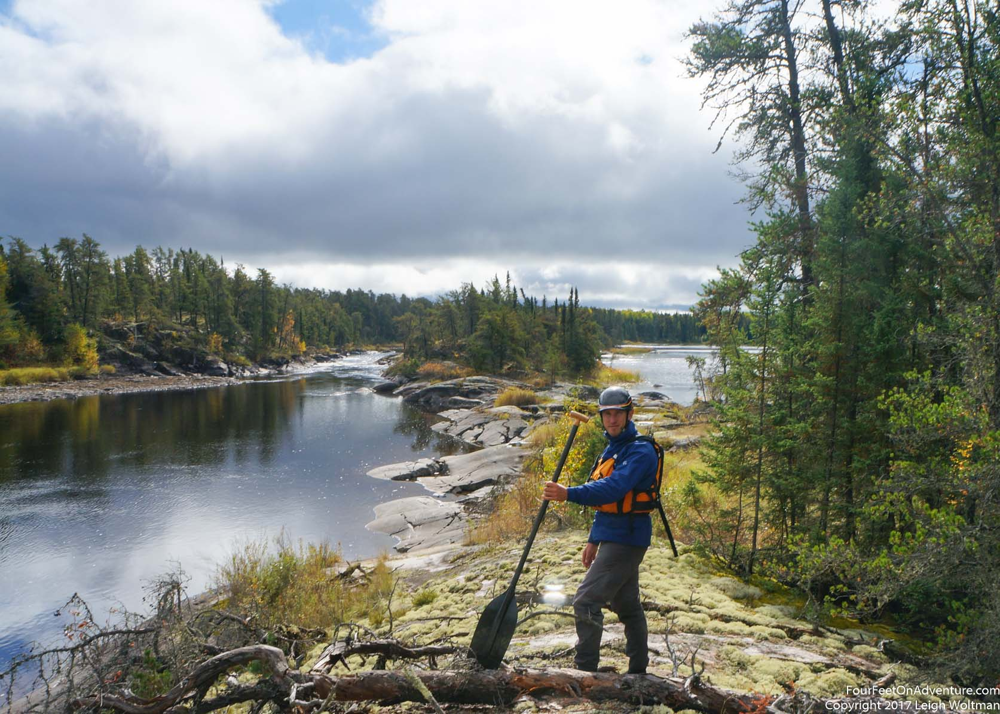
Downstream we saw a hunter in a bright orange vest spoiling his camouflage rain gear. We talked to him for several minutes and learned more about their trip and that they had been also flown in by Clint. He offered to help us portage the next rapids but we assured him we would be okay. Opikwach Rapids was so tempting. There was a beautiful tongue to ride down but it was right on the edge of our abilities. We ended up lining the canoe down a small stream running beside the rapid, but it was one of those ones where you regret not giving it a try. Smooth Rock Falls didn't let down, we had to portage. Fortunately it was short, and the thundering water to our left made sure we didn't have an regrets about not running this one. At the base of this rapid was the moose hunter's camp. As we rounded one more bend in the river, sure enough we saw a moose. It watched us for a bit before stomping off into the bush. Soon we were at White Beaver Falls, and it really was pretty. The rapid was obstructed by a huge slab of rock positioned perpendicular to the flow of the water, blocking it and causing the water to flow down channels on each side. Here the water rejoined and swirled through a couple turns before dropping over a few ledges. It could be a fun rapid but the lines were challenging, so we took the portage trail. At least, Annette did the established trail, and I refused it, walking over the bare rocks beside the trail. Once we loaded the canoe back up, we were almost stymied into getting back on the river as there were shallow rocks blocking our exist in every direction. Only in one spot did we manage to squeeze through and find deep water again.
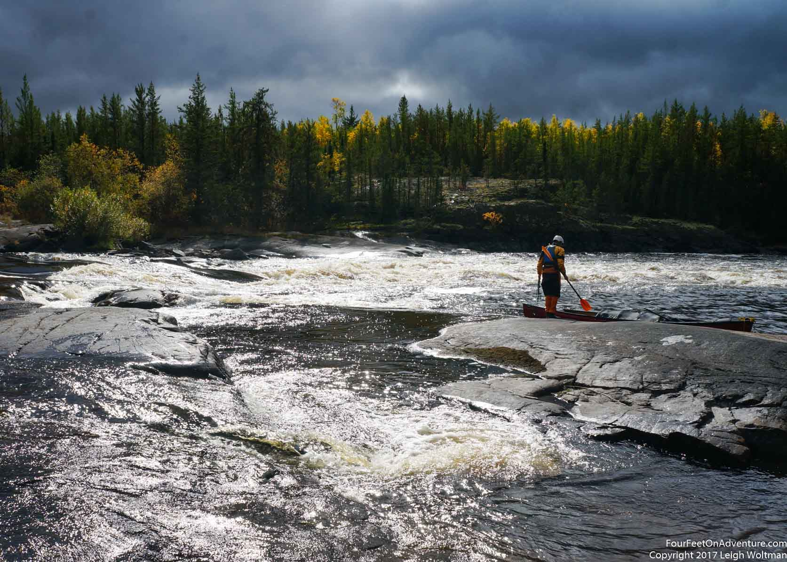
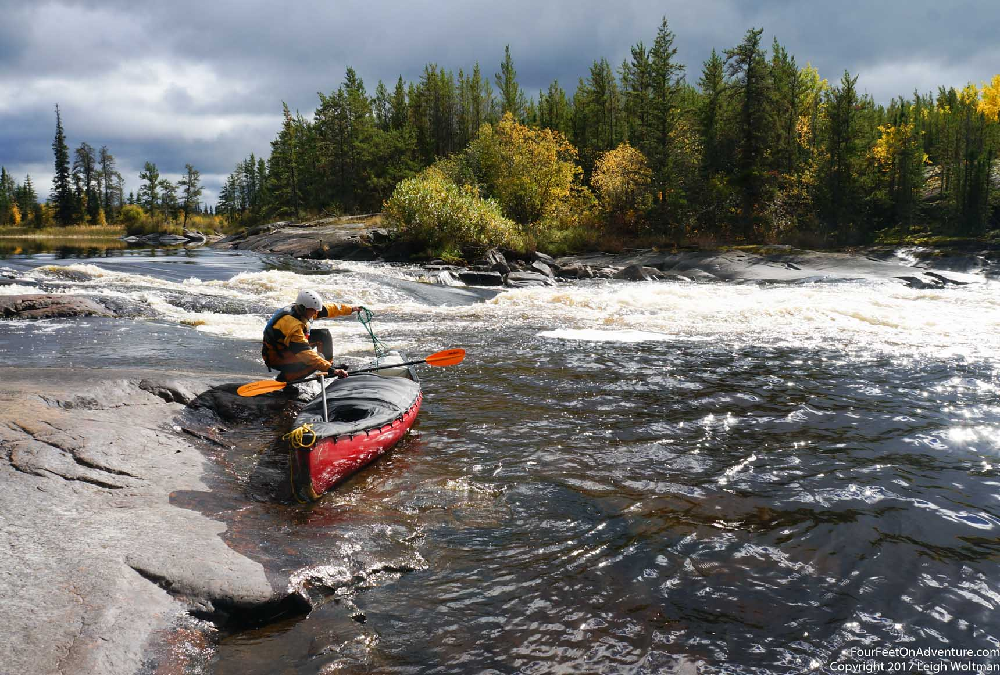
Pine Island Rapids was a small rapid, just a class one or two and the rapid was a little ledge followed by a right turning sweep in the river around an island, appropriately covered in pines. The rapid was easy, the fun kind and the setting was beautiful, I couldn't imagine a better spot or a better partner to be there with. Around the island, gentle swifts swirled the river water downstream. A large point of mostly bare rock stuck into the river, corralling the swirls to one side. On top, the rock was flat, and it was here we pitched the tent for the night. We both needed a bath which ended up being pretty quick as the water was nice and icy. The sound of the rapid just upstream gave a gentle background track to fall asleep to. In the morning, the scene got even better as now a thin layer of patchy fog joined the swirls in the river. We would slowly dry our gear again this morning, but neither of us was in a rush to leave.
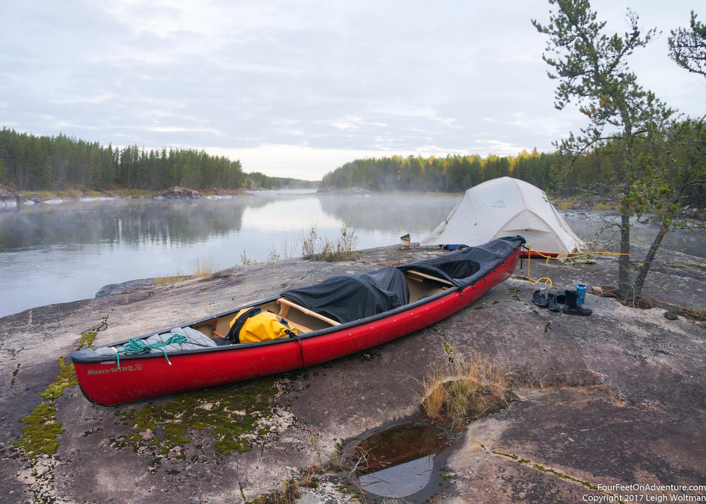
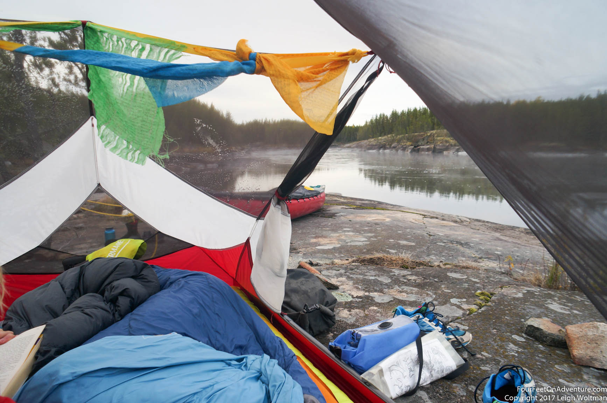
Once on the water we passed old wooden bridge piers still in the water from an old ice road. The deck described in previous guide books is now long gone, and it won't be too much longer as already half of the piers are gone. Sharp Rock Falls looked tempting if we could just keep left and punch out of the main current into the eddy halfway down the drop, but if we didn't do that it would be a bumpy ride. We carried over the ledges of rock beside the rapid. The twin rapids of Wapeekun and Wapanoneeki line up to each other in a low relief canyon. We walked the portage trail which is on a ridge above the rapids but both looked easy so we setup for a relaxing run. It is always nice to slip downstream with just a few paddle strokes here and there. The following section of river was confusing to follow on the map as there were several swifts and class I rapids and it was hard to tell exactly which one were were at. It wasn't until we arrived at the more definitive Old Fort Falls that we could definitely locate ourselves. This one was a solid one metre vertical drop, we we waded and carried over the slippery little rock sticking out of the middle of the rapid.
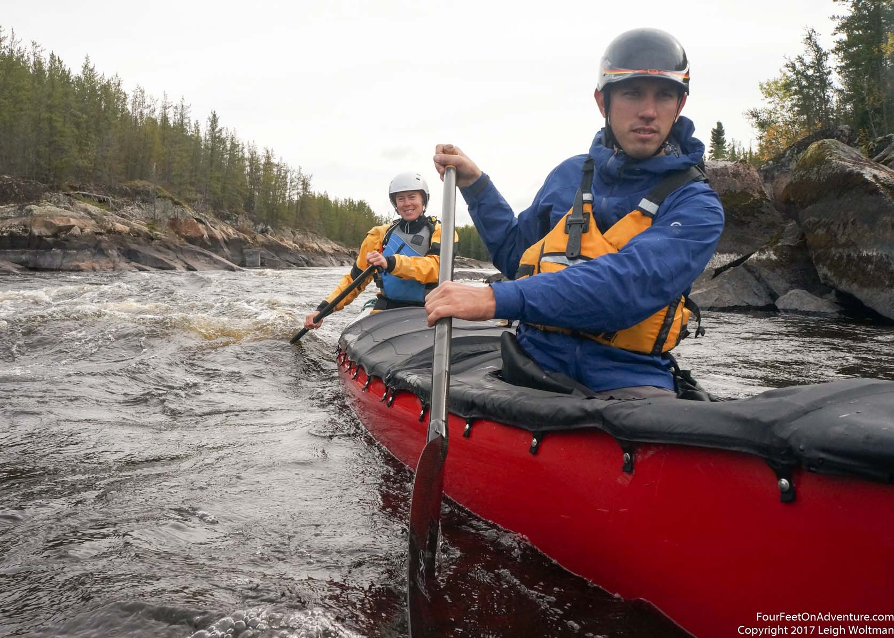
At this point we caught up to a family of Trumpeter swans. Two white adults and four grey offspring. The adults take to the air and start flying very large circles, but the babies don't and just keep paddling down river. The river is fairly wide and the only direction we want to head is downstream so a race begins! Nevertheless, they try to keep a hundred metres in front of us. We continue on, Annette giving them lots of room to turn around, but they continue in the direction we are going. Very slowly, we are closing the gap, and after a kilometer of paddling, we are now more like forty metres behind them. The adults continue doing large circles honking, and Annette having experienced European swans keeps a suspicious eye on them. Eventually, we have closed to within 10 metres behind the babies, with us on the right side of the river and them on the left. They have their leader, and they follow, but eventually, the back on realizes if he just stops swimming, we will pass by. He tries it for a second but then hurries to catch up to his siblings. But having realized what would work, he gives in to logic and turns around. After a little bit, the third in line, realizes the plan of the last and turns around to follow. A little later, the second one does too. Now it is just the original leader trying to out swim us, and after a good attempt realizes he is no longer leading a flock and turns around to rejoin the rest.
At our next rapid, it is time for lunch, and we can't run the main flow anyway. We take the barrels out and carry them to the bottom of the rapid. We figure that with the empty boat, we can lift over the first ledge, put in the main pool of the rapid and run the right side out. The last drop has a jet of water shooting up a little like a rooster tail, we setup well and we ride the tongue on its twisting course. The boat does a shuffle underneath us and we glide out with some good speed. With a little lining we are able to reduce the lift over distance of the next falls. Ahead, the river splits into two channels and the first one we investigate is blocked by a dry ledge of rock, all the water goes the other direction. We have a beautiful start to the this channel. It is just a class one rapid but one side of the rapid is a perfectly straight smooth rock face and the water caresses by it at full speed allowing us to zip along just a hand's reach from the rocks. This leads to another good sized rapid but we are able to lift over a large rock in the middle. This is starting to become standard procedure for us.
And suddenly the river has mellowed out, the terrain surrounding the river becomes flatter with little relief and the stands of trees are now more poplars than pines. Over the next several kilometers we don't have any rapids other than one swift passing through a rocky area, we have definitely found a swamp on the Berens. After more hours of this we were indeed ready for a campsite. Passing pyramid swifts we found the rock that gives the area its name. It was easy to spot and surprisingly pyramidal in shape. Of course, to make these swifts, there is some rock around so we look for a campsite. I hop out the boat to check out one point, but it is far from flat. It does have a little elevation so I can look around. There is a small island in the river ahead that is mainly rock and rises out of the water by just a metre or two. It is all flat and sloping so it will likely have something we can make work. With our inflatable sleeping pads we are indifferent as to how hard the ground underneath us is, as long as it is flat. A large sheet of flat rock is even sometimes preferable even though from a comfort standpoint it would seem to be the worse, the rock means we don't have organic material collecting water underneath the tent, and it ends up staying quite dry. Before leaving the point, there are lots of long beaver stripped trees, so I grab three to make a teepee drying rack on our treeless island. We eat dinner just as the clouds open up some and the sun shines through to give us another sunset cast in bronze light.
The morning is chilly, and the sun seems extra slow to rise this morning. Fog wisps around in the gentle air movement and a layer of frost covers the canoe and grasses around our tent. A uniform band of cloud obscures the sun just enough so you can see the outline of it clearly and it almost looks like the moon. But it is beautiful and we roll open the tent door to lazily watch the sun rise. Eventually there is enough heat to coax us into our morning drying routine. We watch the sun rise above the band of clouds into the clear blue sky. Within a couple minutes the sky is suddenly covered in clouds, probably at least 50%. We finally realize that our sunny mornings and then cloudy days are not because clouds are moving in but quite the contrary, once the sun rises they are forming spontaneously above us.
We paddle away from our island, having given it a customary double and triple check for any forgotten belongings. The blue sky reflects in the river and the wind hasn't quite started blowing hard enough yet, so ripples are only forming on one half of the river. The other half is like a sheet of glass for us to slice our path through. In a little bit, we see an animal jump up from a rock point extending down to the river from the trees. It is a wolf. He pauses, before entering the trees, turning his full head to look at us and wonder what has woken him from his sunshine snooze. And then seconds later, he turns and slips quietly into the trees.
Ahead of us, we can see where Moose Falls will be, finally we are getting into some proper rock again. Annette claims to see a boat on the portage, but I dismiss this as just a fallen tree. Sure enough, her thought is confirmed as we get to the portage. It is a huge fibreglass freighter canoe. We survey the falls from the portage, definitely a nice picture, but we will be using the wide trail around this one. We can see in the distance that the rapid marked as existing the pool below the falls is not really a rapid but just swifts. We will portage to this and continue on. The canoe is a bit more stable on Annette's shoulders, now having made improvements in her techniques. The portage trail is quite steep down to the water but we get down in one piece. The sun is hot and we are removing layers for what feels like the first time in a long time. We have so many clothes off that our dry bags are bulging with gear. When we stop for lunch there is even enough sunshine to charge the camera on solar power. The camera is the most demanding of our chargeable gear and we should have taken this as a sign to put on some sunscreen.
When we got to the next major rapid at Upper Conjuring Falls after lots of paddling through swampy area we pulled out on river left to take a look. The rapid started with a simple class one, to a pool where the main flow of the river went over the major drop. We could tell we wouldn't be running the major drop. Meanwhile, we saw a group of men boating up to the bottom of the falls. A couple of them got out on our side and started up the portage trail. The others started portaging their boats up the other side. By the time we got back to our canoe, two of the men were bailing out the aluminum boat that sat at the end of the portage. One was carrying a motor for it. They were from the First Nations community of Berens River and were off on a Moose Hunt. Annette and I prepared our canoe, and we ran tight to the right side of the class one start and into the eddy of the big pool. We watched our paddle strokes carefully as it wasn't an eddy we wanted to miss. We pulled up to the shore just below where the other members of the group were portaging by. An older man was taking a break on the rock so before we dragged our boat up we asked him a little more. He told us about their plans for a moose hunt and that the metal Christian cross along the shoreline of the pool was actually put up by him. He told us his brother had a stroke on what seemed to be a previous hunting trip. They also gave us an update about the weather which was supposed to hold clear but potentially be windy. We bid them good luck and carried our boat in the opposite direction down their portage trail.
Immediately following around the corner was Lower Conjuring Falls which was a steep ledge where we couldn't see any breaks giving us a clean line. Fortunately placid water flooded the right side up to the actual ledge so we could line the boat along the shore here and then slide the boat down the drop where a little bit of water was flowing over. Shortly downstream we approached Kasup. Falls which was a very broad rapid. We pulled out on the island in between channels and surveyed. Even walking around didn't allow us to get a great view, but the rapid seemed straight forward. We were warm and dry so we decided to give it a go. We lined up well and lined up for a good spot through the ledge, however, what wasn't obvious from shore is that another ledge followed just a couple metres after the first. We made a panicked attempt at choosing a good line, but it was a really a good brace and a bit of speed that got us through, abiet full of water. The sun was quickly falling and we needed a spot to camp. We found one spot that looked perfect but found a hunting cabin disguised in the trees behind it. We decided to pass in case someone showed up to use the cabin. At the next little swift, we found a rocky point with a sloping ledge that was flat enough for the tent. It did need a little bit of landscaping as the edge of the rock area was growing some plants with small thorns that would have done some damage to the tent. With them removed, we made the spot work.
We awoke to mixed skies and were happy to see this as it was nice to paddle along fairly dry. Our first rapid then was tempting, the flow split into several channels around a couple islands, but the centre channel looked the best. We scouted from an island with nice camping and decided to setup for the drop. I wanted to run it tight to the right side and expected we would hit an eddy after the first drop. Annette was a little more skeptical of this plan and we did end up missing the eddy but still pulled off a decent run. It was followed by Grey Willow Falls which was indeed a large falls. A secondary channel had a small amount of water so we waded the boat down this and then lined the bottom part. It wasn't the gentlest of routes for the canoe, but was much better than carrying all our gear. Some swifts pulled us into a rocky maze that followed. Here we had rock walls for all banks of the river with deep depressions that were hard to tell if they were the river channel or just a dead end.
The next ledge presented a problem, it had some breaks in it on the river right side so it kind of looked like we should be able to run it. There was a rock in the middle of the rapid we could scout from. At this angle it looked like running tight right and then veering left at the last minute would be an okay run. I was a little nervous about the route, Annette was rightfully more so, and was hesitant. She suggested we also scout from the right shore. We paddled over and then hiked over a steep hill to look down from the rocky wall of the right bank. From here, our line looked a little shallow and while we might grind over it, it wouldn't be pretty. Another line looked possible, a little more to the left. However, we couldn't tell how deep it was and hitting a rock that would give us a strong directional change would have quick consequences. In the end, we didn't run it. I think this wouldn't have been the choice I would make on my own, but it was probably one of those rapids where I don't have a good run. Annette made me realize that probable outcome even if in the moment i couldn't recognize it myself. We waded over the river left side of the ledge. This ledge was dumping into a pool and the outlet was a narrow squeeze through two high rock walls. According to the guidebook, the ledge should have been an easy runnable rapid and the squeeze the hard one, but now, the squeeze offered just some swifts. This was our most plain example about how different sizes of outflow gaps change the ratings of the various rapids and alter the water level differently for each pool on the river. With higher water when the guide was written, water would have been constricted by the high rock walls of the second rapid and therefore filled up the pool more, submerged the ledge to the point where it would become an easier rapid. But in low water, the challenge of each is dramatically reversed. Out of this twisted area of rocky influence on the river was one last rapid, and again, water levels made what was supposed to be a class three, just some simple swifts.
When we arrived at Kamin. Falls we agreed to have lunch after running it. Like most rapids, this one split into two channels with a rocky island in the middle. The main flow was going down the river left channel, and while most of the run was a pretty ledgy drop, tight to the right side of this channel looked like it had potential. It would be the biggest piece of whitewater we'd run, but the challenge was all concentrated on one spot. The first wave could be avoided by keeping right, and then drop through the main drop and try to get through without swamping. It was flushing decently well down the rocky channel that followed. We would need some floatation so we took the barrels and heavy bag out and portaged them over the island. We got ready for our run and positioned ourselves above the brink. As with most rapids, it looked a lot more challenging from this vantage point. Annette hesitated and we held position in a back ferry trying to decide what to do. Eventually, she decided she didn't want to run it. We aborted and paddled back to the island. We decided that the right channel with less water would be worth a try. It was actually quite fun, just enough water to float the boat, but still lots of maneuvers as the river took a much more convoluted path to rejoin the main flow. We had so much fun that we decided to portage the empty boat back up to the top and run it again, this time we switched positions for the first time in a rapid. Annette in the front with a big view of what we were heading through. I noticed here as she did too, that the back is a little more relaxing of a spot to be. In the back you see the canoe ahead of you which tends to rationalize what you are about to go through, whereas in the front, all you see is the whitewater ahead and watch the bow plunge through the waves. It was another good experience so we did the portage again and ran it one more time. At this point, it was time for lunch, so we sat down and ate before loading up the canoe and continuing on.
A little while later we came to Sturgeon Rapids and we pulled out to run over the portage and scout the rapid. The good news is the rapid was runnable. We talked about our line, as river left had a ledge at the bottom and our best run through would be a break in the ledge making a smooth vee water on the river right. To hit this river right we would have to keep far right as water coming in from a further right channel would push us off course. We walked back up to the canoe and I confirmed our route only to find Annette had no recollection of the rapid! I guess it was a long day. I knew the line, so I said 'just follow me'. The rapid had a nice channel leading to it, and the water sped up as it got more and more confined. We hit our line good and punched through the wave at the bottom. It was a great rewarding run. Within a hundred metres, Sturgeon Falls followed. This would not be run, so we portaged over and then ran out the tail race a little bit. The sun was starting to set so we looked for the next campsite. A rocky point at a sharp bend in the river would make a fine base for our night.
In the morning, we woke up knowing we only had one marked rapid left. I hadn't slept that well, as I thought I could hear the sounds of a pile driver in the middle of the night. Of course, Annette never heard anything. We paddled flat water all day except for English Rapids. It was more of just a swift.
As the day wore on, we started to first notice some more outpost cabins, then trails with the occasional ATV ran alongside the river. Soon, houses were frequent and we could see planes lining up for the runway. Annette made the observation that our exposure to the wilderness and complete isolation made this feel almost the same as entering Las Vegas from the desert. Soon, we were in the town of Berens River and both banks of the river were now bustling with civilization. We stopped and talked to one fisherman to see if he would ferry us to Matheson Island, but with strong winds forecast for the next several days he declined. We paddled to the government wharf which had fallen into such state of disrepair that it was condemned. The RCMP detachment was close so we wandered up to see if we could use the phone. The three officers were very kind, and took us in for tea and chatted to us about all kinds of things, both eager to hear about our trip and tell us what their job was like on the reserve. We found out that the all weather road would be completed in the next month, so the sounds of pile driving I heard were probably accurate. We got a message through to Clint and he could pick us up the next day. We visited the grocery store in town and on our walk there noticed that everybody was always driving in this town, back and forth on the gravel and dirt roads with there only being several kilometers to go.
For the night we paddled out the mouth of the river towards the big lake. Lake Winnipeg opened up before us and we took a campsite on a shelf of rock dividing two beaches. To end our trip, of course, the sky cleared completely and the clear band of sky we could only ever see in the evenings was now above us. We watched the sun head all the way to the horizon on the lake as the sky turned bright orange. It was a metaphorical end to the trip.
We spent the next day waiting for the float plane. Clint ended up being quite late as he had a very busy day of flying. The wind was blowing against us so we had enough flight time to watch the eastern shoreline of the lake twist along. We would have liked to paddle the shoreline back to our car, but that will have to wait till next time. We were surprised to find Clint lined up the plane to land just in the little bay where he docks the planes. We made a slow descent over Matheson Island coming closer and closer to the trees. He timed it just so we cliped the edge of the reeds creeping into the bay and the plane softly touched down. It was so foreign to be transported back to the car and soon driving back south. Parts of the trip had been hard, but they had been sublimely simple, nothing to do but paddle and solve problems around obstacles all day. Such a wonderful way to spend time.
Please send us an email, we would love to hear from you!